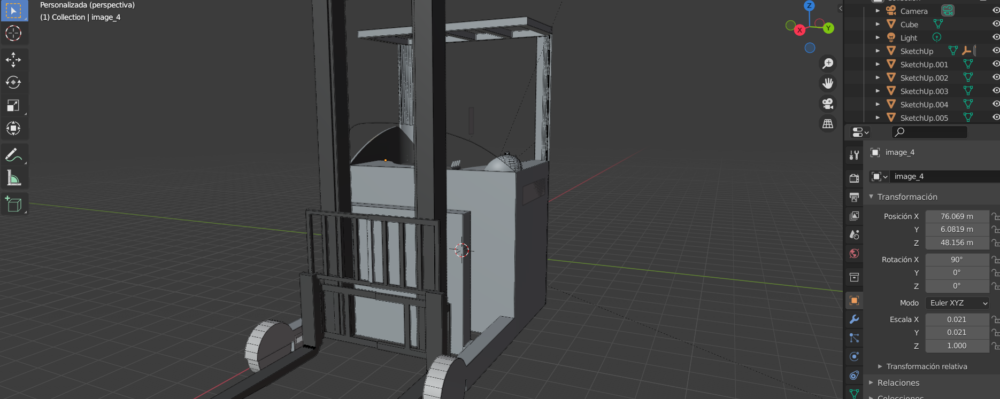

Ingeniero Industrial · UPEMOR
Luis Daniel Bahena Zagal
Automatizo procesos y conecto sistemas para que el trabajo repetitivo se haga solo.

Sobre mí
Soy estudiante de Ingeniería Industrial en la Universidad Politécnica del Estado de Morelos, actualmente en el décimo cuatrimestre. Durante mi formación me interesé por la automatización de procesos, la integración de herramientas digitales y la mejora continua en entornos productivos.
Soy proactivo, meticuloso y autodidacta. Me gusta analizar una tarea, encontrar dónde se pierde tiempo y simplificarla con tecnología: macros, hojas de cálculo automatizadas o sistemas hechos en Python y PHP.
Mi meta es especializarme en automatización industrial y administrativa, y diseñar procesos más inteligentes, conectados y sostenibles que aumenten la productividad de las empresas.